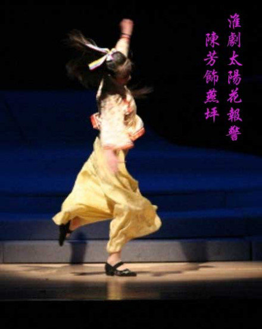

生
生行是戏曲表演行当的主要类型之一。扮演男性人物。生的名目初见于宋元南戏，泛指剧中男主角。历代戏曲都有这一行当，近代各地戏曲剧种根据所扮演人物年龄、身份的不同，又划分为老生、小生、武生等分支，表演上各有特点。

旦
旦戏曲表演行当的主要类型之一，女角色之统称。早在宋杂剧时已有“装旦”这一角色。宋元南戏和北杂剧形成后仍沿用旦的名称，运用上又略有不同。昆山腔成熟期，形成正旦、小旦、贴旦、老旦四个分支。其后各剧种又繁衍出众多分支。近代戏曲旦角根据所扮演人物年龄、性格、身份的不同，大致划分为正旦（青衣）、花旦、武旦、老旦、彩旦等专行，表演上各有特点。